Es un sistema que registra los cambios realizados en un archivo o conjunto de archivos (tanto inclusión/creación de archivos nuevos como modificación o borrado de los ya existentes) a lo largo del tiempo, de forma que se puedan recuperar versiones concretas con posterioridad.
Un sistema de control de versiones centralizado es aquel en el que se utiliza un único servidor que contiene todos los archivos versionados y varios clientes que descargan los archivos desde ese servidor. La principal desventaja que presenta este sistema es que si el servidor deja de funcionar, nadie podrá colaborar o guardar cambios en los archivos almacenados en el servidor.
Sin embargo, en un sistema de control de versiones distribuido, los clientes no solamente descargan la última copia instantánea de los archivos, sino que se replica completamente el repositorio. De esta forma, si el servidor deja de funcionar, cualquiera de los repositorios disponibles en los clientes puede ser copiado al servidor con el fin de restaurarlo.
Git es un sistema de control de versiones distribuido, generalmente utilizado para coordinar el trabajo entre programadores. Destaca por su gran rendimiento, seguridad y flexibilidad.
No hay que confundirlo con GitHub, que es una web que ofrece un servicio de alojamiento de repositorios y que utiliza el sistema de control de versiones distribuido Git. GitHub fue creado para alojar el código de las aplicaciones de cualquier desarrollador. Por lo tanto, GitHub es un portal para gestionar las aplicaciones que utilizan el sistema de control de versiones Git.
Iremos a la dirección http://www.github.com y pulsaremos en el botón "Sign up" situado arriba a la derecha. A continuación iremos introduciendo nuestra dirección de correo electrónico, elegiremos una contraseña, un nombre de usuario y diremos si queremos o no recibir actualizaciones del producto y noticias via correo electrónico:
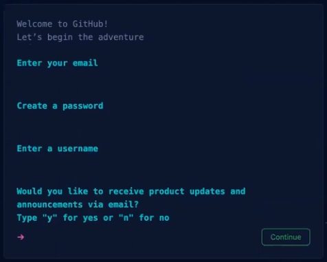A continuación completaremos un proceso de verificación mediante imágenes:
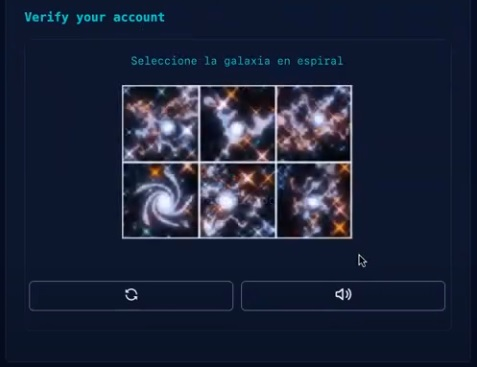Y posteriormente comprobaremos si hemos recibido un código en el correo electrónico especificado en el primer paso y lo introduciremos:
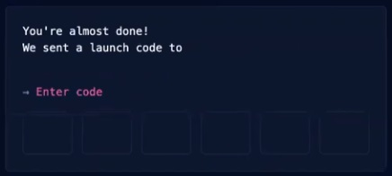Ya casi lo tenemos! Por último nos hacen algunas preguntas como:
Después de contestar estas preguntas, nos da a elegir entre la versión gratuita y de pago. Pulsamos sobre el botón "Continue for free" y...ya tenemos nuestra cuenta en GitHub!
En mi caso, mi cuenta de usuario de GitHub es https://github.com/ercc75
Usaremos Git para subir un proyecto a GitHub. Instalaremos el sistema de control de versiones Git en nuestro ordenador y realizaremos los pasos que se describen a continuación.
Iniciamos la cuenta GitHub (en este caso ercc75) y en el menú desplegable "+" situado arriba a la derecha, elegimos la opción "New repository". Creamos el nuevo repositorio llamado "ejemplo_tarea1_DWES" de la siguiente forma:
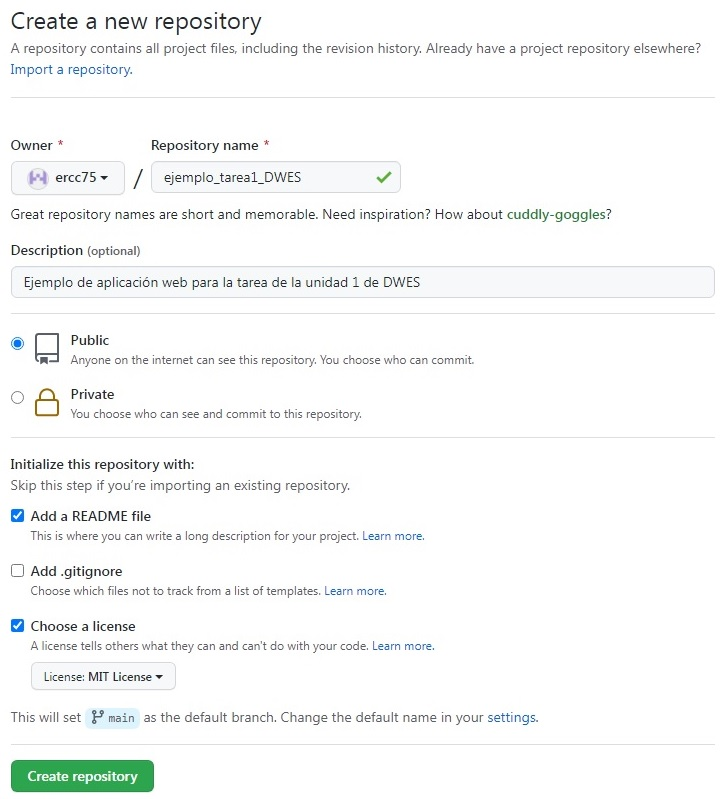Abrimos la ventana de comandos Git, nos vamos al directorio donde queremos copiar el repositorio creado en GitHub y ejecutamos la instrucción "git clone" junto con el nombre del repositorio, de la siguiente forma:
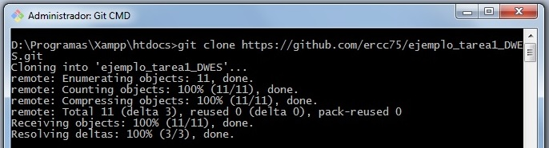Ya tenemos creada en el directorio de nuestro disco duro local la carpeta "ejemplo_tarea1_DWES". Aquí crearemos/copiaremos los archivos que queramos subir a Github:
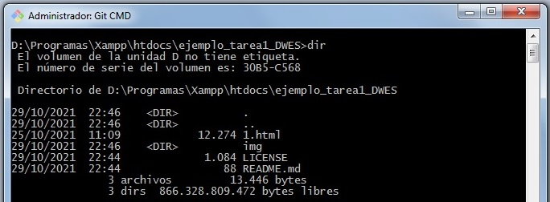Mediante el comando "git add ." subiremos al staging area (zona todavía en nuestro disco duro local) todo lo creado/modificado/borrado. Con el comando "git status" podemos comprobar cuáles han sido las operaciones realizadas:
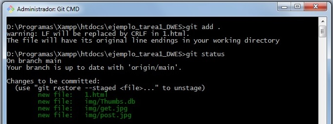Mediante el comando "git commit" traspasaremos los cambios al local .git, paso inmediatamente anterior a la subida al almacenamiento remoto GitHub. El parámetro "-m" sirve para añadir un comentario aclarativo a la operación commit:
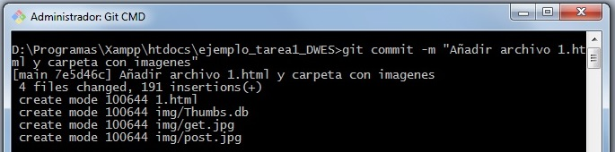Como paso previo a la subida a GitHub, crearemos un token. Para ello, pulsaremos el icono de nuestro usuario situado en la parte superior derecha e iremos a Settings -> Developer settings -> Personal access token -> Generate new token, introducimos los siguientes datos para nuestro ejemplo y le damos a "Generate token":
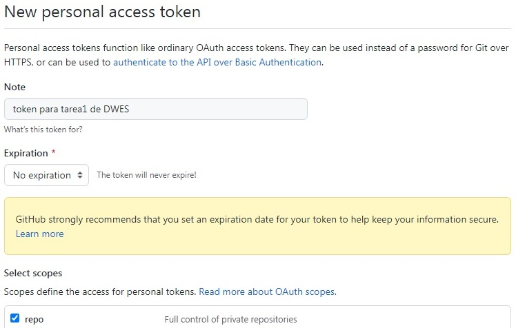Por último, ejecutamos el comando "git push" para subir todo a GitHub, usando el token obtenido anteriormente de la siguiente forma:
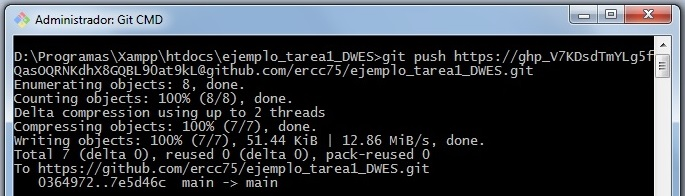Desde la interfaz de GitHub podemos comprobar que se ha subido todo correctamente:
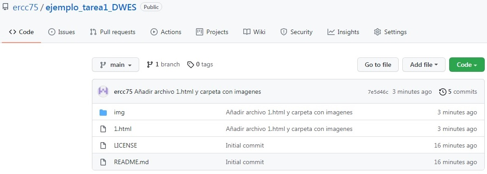